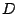
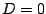
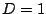

Next: Switch P, Seed search
Up: SITEBLAST commandline options
Previous: Switch i, IUPAC seeds
This option sets the number of allowed mismatches of an individual seed point to the given consensus description as given by the i option or the I option. In other words, subsequences that deviate from the consensus in  positions are still considered as seeds. These seeds will be subsequently employed in alignment building.
Allowing for additional mismatches leads to the acceptance of more subsequences as seed pairs. For example, valid seed pairs for consensus pattern CCWWWWWWGG include CCATAATAGG - CCATTTTAGG for  and ACATAATAGG - CCATTTTAGG for .
Christoph Dieterich
2004-12-06